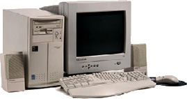

IT ja inseneriteaduste konsultatsioonifirma AB Net on loodud juba 2000.aastal. Pakume oma abi
infotehnoloogia, telekommunikatsiooni ja interneti alal asutustele ja organisatsioonidele, kes
hindavad kompetentsi, kontrollitud kvaliteeti ning vastutust
lepinguliste kohustuste täitmisel. AB Net annab konsultatsiooni lähtuvalt Teie vajadustest ja
soovidest.
Pakume oma klientidele pikaajalist ja usaldusväärset koostööd.
Teenused
Teadusprojektide juhtimine
- professionaalne teaduse ja tehnoloogia projektide juhtimine
Arvutustehnika-alane
konsultatsioon
- IT strateegiline planeerimine
- IS arendamine
- IT töökorraldus
- Koolitame välja Teie ettevõtte IT tugiisiku.
Arendusprojekti
juhtimine
- Organisatsiooni infosüsteemi strateegilise arengukava välja töötamine
- Organisatsiooni IS arendusprojektide lähteülesannete koostamine
- IT töökorralduse koostamine ja juurutamine vastavalt organisatsiooni vajadustele
Tagame tööde professionaalse ja õigeaegse teostamise.
Projekti juht
Pakume tööd infotehnoloogia ja telekommunikatsiooni-alaste projektide spetsialistile, kelle
tööülesandeks on erinevate antud valdkonna projektide teostamine firmas AB Net.
Kandidaadilt eeldame
- kõrgharidust
- väga head eesti keele oskust, nii kõnes, kui kirjas
- head inglise, soome ja vene keele oskust
- analüütilise ja süsteemse mõtlemise võimet
- eelnevat töökogemust ja erialast täiendkoolitust
- häid infotehnoloogia ja telekommunikatsiooni-alaseid teadmisi
Kasuks tuleb
- projekti juhtimise kogemus
- varasem tegutsemiskogemus IT konsultandina
- kvaliteedijuhtimise (ISO) süsteemide tundmine
Omalt poolt pakume
- häid töö tingimusi, söbraliku töökolletktiivi
- kiiresti arenevat töökeskonda
- tulemusele vastavat palka